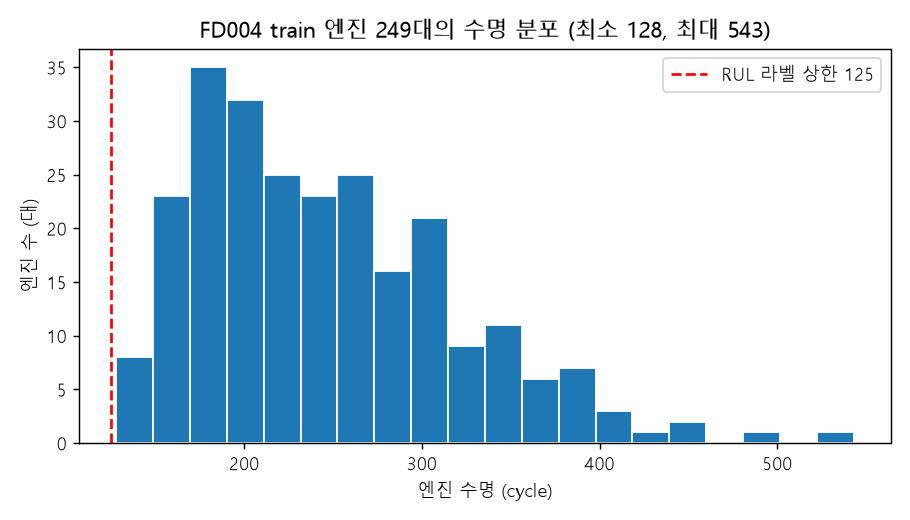
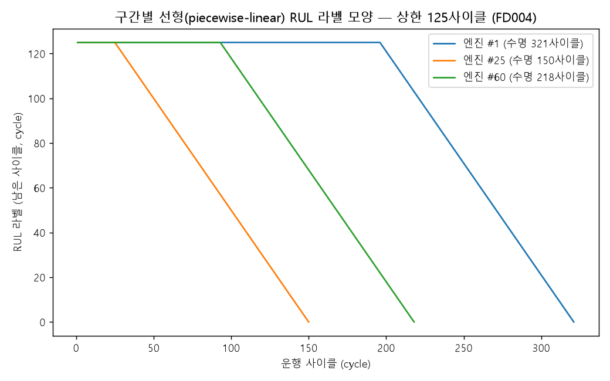
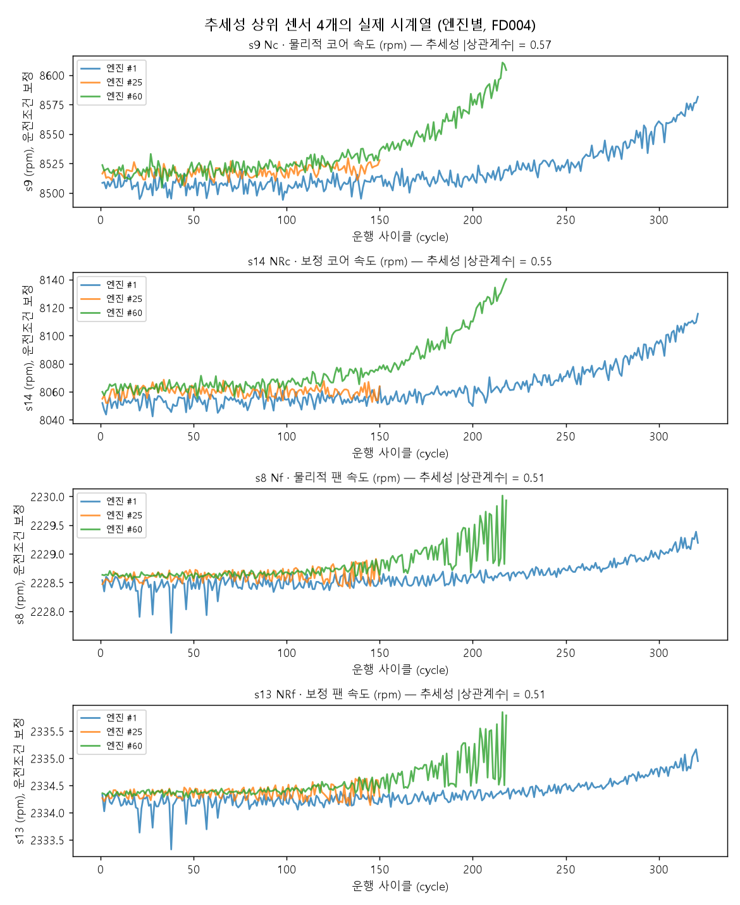
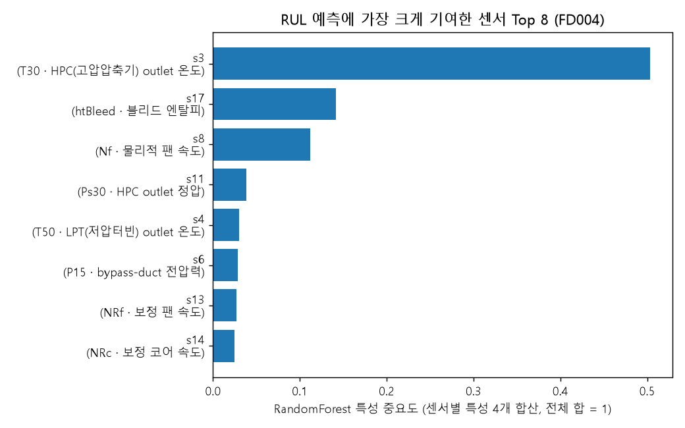
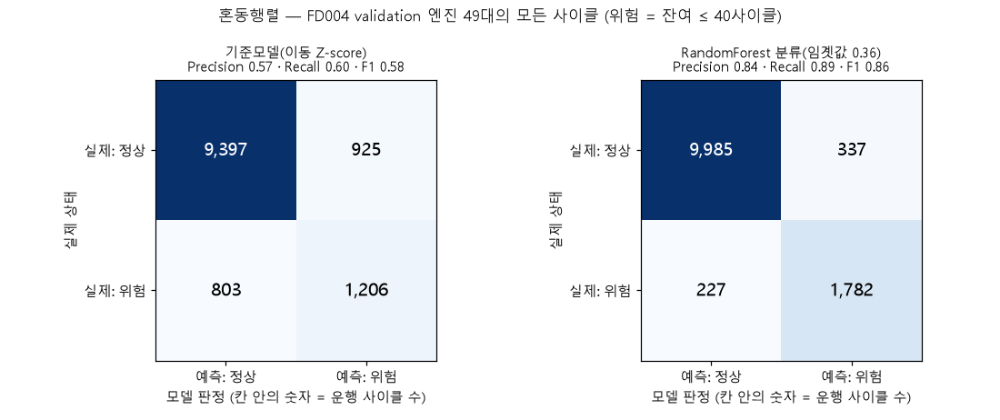
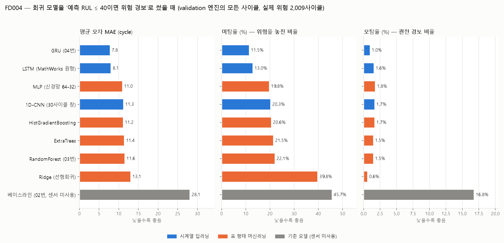
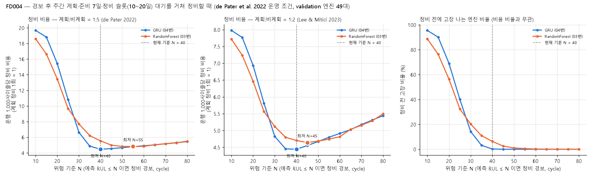
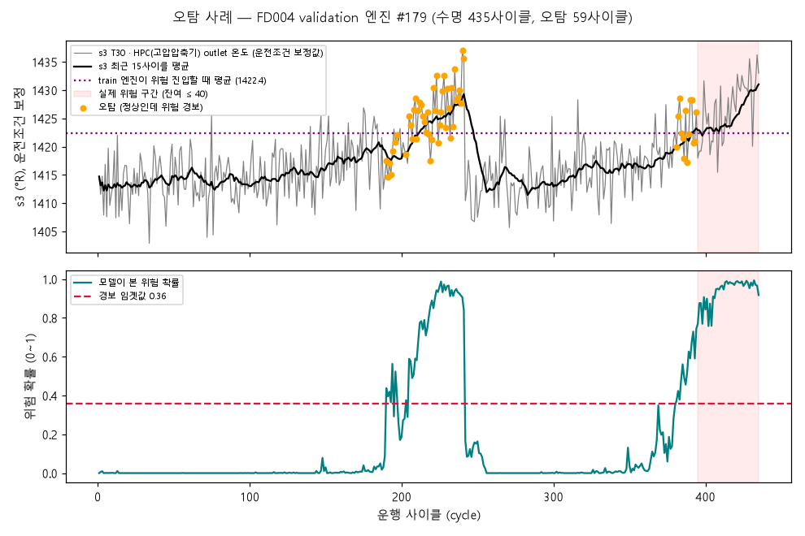
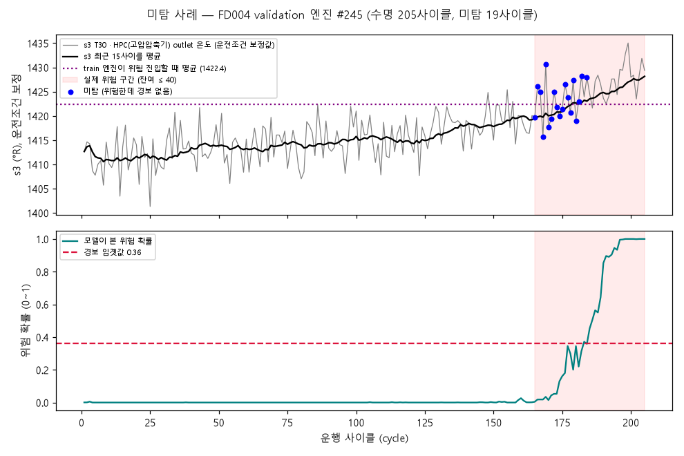

설비 고장을 예측하는 AI 데이터 분석 1기 · 통합 프로젝트
Sentinels
항공기 터보팬 엔진 고장 예측 프로젝트
5조 · 감시자들 | NASA C-MAPSS FD004
팀 소개
5조 감시자들 — 조원별 역할
최영준
팀장 (PM)
문제 정의
도메인 해석·대시보드 연동
문서화·발표 총괄
SENTINEL · 5조 감시자들
한형희
데이터
데이터 이해
전처리·기초 분석
SENTINEL · 5조 감시자들
최규인
시계열·특성
전처리·기초 분석
시계열 분석·특성 생성
SENTINEL · 5조 감시자들
조민우
모델링
모델링
평가·오류 분석
SENTINEL · 5조 감시자들
이문용
해석·문서
평가·오류 분석
도메인 해석(비용 시뮬레이션)
SENTINEL · 5조 감시자들
목차
CONTENTS
발표 순서
문제에서 시작해
현장 활용까지
6단계로 설명합니다
1
문제 정의
무엇을, 왜, 어느 수준까지 맞혀야 하는가
2
데이터 이해 · 전처리
FD004 선택과 4가지 전처리 원칙
4
기준 모델 · 머신러닝
기준 모델 대비 분류·회귀 결과
5
평가 · 오류 분석
위험 기준 40, 모델 선정, 신뢰도, 오탐·미탐 사례
6
현장 활용 · 한계 · 개선
보전 담당자가 이 결과를 어떻게 쓰는가
① 문제 정의
엔진이 고장 나기 전에, 정비 시점을 알 수 있을까?
항공기 터보팬 엔진 센서(온도·압력·회전속도) 기록 → 그 엔진이
앞으로 몇 번 더 비행할 수 있는지(남은 수명, RUL)를 예측하고, 고장 전에 정비해 긴급 정비 비용을 줄일 수 있는지까지 판단
정상 (80사이클 이상 남음)
주의 (40~80)
위험 (40 이하)
고장
1사이클은 엔진의 1회 운행 단위이며, 데이터의 각 행에는 해당 시점의 운전조건과 센서 측정값이 기록
엔진 한 대의 수명 흐름 (왼쪽 → 오른쪽 = 운행 사이클이 쌓임). 남은
수명 40 이하를 위험으로 정의
왜 중요한가
고장 나서 하는 긴급 정비는 계획 정비보다
2~5배 비쌉니다 (문헌 비용 비율 1:51, 1:22). 미리
알면 계획 정비로 바꿀 수 있습니다.
필수 과제
이진 분류
지금 위험한가?
남은 수명 40 이하면 경보
선택 과제
RUL 회귀
몇 사이클 남았나? 숫자로 예측
비용 환산
예측을 정비 비용으로 바꿔 비교
출처
- de Pater, Reijns & Mitici (2022). Reliability Engineering & System Safety 221, 108341 — 비용 1:5
- Lee & Mitici (2023). Reliability Engineering & System Safety 230, 108908 — 비용 1:2
② 데이터 이해 · 전처리
가장 어려운 서브셋(FD004)을 중심으로
|
FD004 (주) |
FD001 (비교) |
| 운전조건 |
6가지가 계속 바뀜 |
1가지 |
| 고장 모드 |
2가지 (압축기·팬) |
1가지 |
| train / test 엔진 |
249 / 248대 |
100 / 100대 |
| 엔진 수명 |
128 ~ 543사이클 |
128 ~ 362 |
| 사용 센서 |
21개 중 15개 |
14개 |
실제 항공기가 아니라 NASA가 만든 시뮬레이션 데이터입니다.
한 줄 = 엔진의 한 비행 사이클.

교차 검증 — 어려운 데이터로 학습하면 쉬운 데이터도 통한다
GRU, 공식 test 오차 (MAE, 사이클 · 낮을수록 좋음)
학습 데이터 → 평가 데이터 · MAE (사이클)
FD004로 배우면 FD001에도 통합니다. 반대(FD001 → FD004)는
실패 — 55.8은 센서를 안 쓰는 베이스라인(47.4)보다
나쁩니다.
② 데이터 이해 · 전처리
비행 조건 차이는 빼고, 미래 정보는 섞지 않습니다
① 운전조건별 정규화
고도·속도가 6가지로 바뀌면 센서값이 크게 뜁니다.
조건별로 따로 표준화해 "조건 변화"가 "엔진 열화"로 보이지
않게 합니다.
② 변하지 않는 센서 제거
같은 조건 안에서 값이 거의 안 변하는 센서 6개 + 운전 설정 3개
제거 → 센서 15개 사용.
③ RUL 정답은 125에서 자름
새 엔진은 센서가 다 건강해 보여 구분이 안 됩니다. 가장 짧은
수명(128)보다 작은 125로 한계를 둡니다.
④ 엔진 단위 분할 · 누수 방지
엔진을 통째로 200대 학습 / 49대 검증(시드 42). 정규화
기준은 학습 엔진만으로 계산, 공식 test는 마지막에 한 번.

그림: 엔진 3대의 RUL 라벨. 평평하다가(125) 고장 직전에 직선으로
떨어집니다.
③ 시계열 패턴 분석
센서는 엔진마다 서서히, 다른 속도로 변합니다
-
비행 조건 차이를 뺀(운전조건 보정) 값으로 보면 센서가
한 방향으로 서서히 이동합니다.
-
추세성 상위: 코어 속도(s9), 보정 코어 속도(s14), 팬 속도(s8),
보정 팬 속도(s13)
-
같은 센서도 엔진마다 열화 속도가 다름 → 수명이 128 ~
543사이클로 벌어짐
그래서 "평균 수명 − 현재 사이클"만으로는 한계가 큽니다. 기준
모델의 평균 오차는 47.4사이클.

추세성 상위 센서 4개 (엔진 3대, 운전조건 보정값)
③ 시계열 패턴 분석
최근 15사이클의 평균 · 흔들림 · 기울기를 특성으로
-
모델이 모델과 무관하게 뽑은 추세성 상위 8개 센서와
비교했더니
-
모델 중요도 상위 8개 중
5개가 겹침 (s8·s11·s13·s14·s17) → 노이즈가
아니라 실제 열화 신호를 보고 판단
-
1위 s3 고압압축기 출구 온도 (0.50), 팬 속도 s8도 상위 → 고장
모드 2종(압축기·팬) 반영

RandomForest 센서 중요도 (센서별 특성 4개 합산, 전체 합 = 1)
④ 기준 모델 · 머신러닝
단순한 기준 모델부터 만들고, 같은 조건에서 비교
필수 과제 · 위험 분류
기준 모델
이동 Z-score 건강지표
정상(처음 30사이클) 대비 얼마나
벗어났나
→
RandomForest 분류
위험 확률 0.36 이상이면 경보
(0.5에서 낮춤)
선택 과제 · 남은 수명(RUL)
기준 모델
평균 수명 − 현재 사이클
(센서 미사용)
→
RandomForest 회귀
같은 특성 60개
→
GRU 회귀
엔진의 전체 이력을 차례로 읽는 신경망
모든 모델 공통:
같은 엔진 분할 (200 / 49)같은 특성같은 지표시드 42 고정
후보 8종(Ridge · RandomForest · ExtraTrees · HistGB · MLP · 1D-CNN ·
LSTM · GRU)을 같은 조건으로 비교해 최종 모델을 골랐습니다.
④ 기준 모델 · 머신러닝
기준 모델 F1 0.58 → 0.86: 머신러닝이 필요한 이유
validation F1 (49대, 모든 운행 시점)
F1 (0~1, 높을수록 좋음)
| 공식 test (248대) |
정밀도 |
재현율 |
F1 |
| 기준 모델 |
0.63 |
0.55 |
0.59 |
| RandomForest (0.36) |
0.89 |
0.94 |
0.92 |
-
위험 69대 중 65대 탐지 (놓침 4), 안전 179대 중 헛경보 8
-
확률 기준 0.5 → 0.36: 재현율 0.83 → 0.89 (놓침이 더
비싸서)
-
정확도는 쓰지 않음 — 위험 시점이 16%뿐이라 "항상 정상"도 84%

혼동행렬 (validation 49대의 모든 사이클, 위험 = 남은 수명 ≤ 40)
④ 기준 모델 · 머신러닝
남은 수명 예측 오차 47 → 17 사이클
공식 test 평균 오차 (MAE)
MAE (사이클, 낮을수록 좋음) · 베이스라인 = 평균 수명 − 현재
사이클
0%베이스라인 대비 오차 감소
25.2RMSE · NASA 점수 4,165

후보 8종 비교 (validation): 평균 오차(MAE) · 미탐율 · 오탐율
오차가 작은 모델일수록 미탐율도 낮습니다 (상관 0.87).
반면 오탐율은 오차와 거의 무관.
⑤ 평가 · 오류 분석
왜 위험 기준 사이클을 40으로 정했을까?
경보가 울려도 정비는 바로 못 합니다 (준비 최소 7일 + 정비 가능한 날
10~20일 간격 + 주간 계획) → 경보 후 정비까지 평균 17사이클

FD004, validation 엔진 49대, 정비 비용 시뮬레이션 (de Pater 외 2022
운영 조건 · 비용 1:5, 1:2 모두 최적 N = 40)
0%기준 30이면 정비 전에 고장 나는 엔진 (비용 +48%)
0%기준 40: 비용 최저
+2%
/ +5%기준 45 / 50: 완만히 늘어남 (너무 일찍 정비)
⑤ 평가 · 오류 분석
GRU 선정: 놓침 → 헛경보 → 오차 순서, 비용으로 확인
정비 비용 (위험 기준 40, 1:5 · validation)
HistGradientBoosting
5.17
운행 1,000사이클당 정비 비용 (계획 정비 1회 = 1, 낮을수록 좋음)
왜 이 순서인가
고장(긴급 정비)이 계획 정비보다 2~5배 비싸므로
위험을 놓치지 않는 것이 먼저. 비교는 비용
시뮬레이션으로.
시드 3개 반복 (test MAE)
GRU 17.0 ± 0.7 vs LSTM 19.4
± 1.4
GRU의 가장 나쁜 값이 LSTM의 가장 좋은 값보다
낫습니다.
GRU의 약점도 있습니다 — 학습 약 12분, 설명이 어렵고,
test에서 놓친 위험 엔진은 MLP(5대)가 GRU(8대)보다 적었습니다.
LSTM과 정비 비용은 1~2% 차이(동률).
⑤ 평가 · 오류 분석
차이가 크면 확실, 작으면 조심해서 읽습니다
공식 test 재현율의 95% 구간 (위험 엔진 69대)
재현율 (0~1) · 점 = 측정값, 선 = 95% 신뢰구간 (Wilson)
확실한 차이
기준 모델과 머신러닝은 구간이 겹치지
않음
조심할 차이
RandomForest vs GRU는 겹침 → test만으로
우열 불가. 엔진 단위 validation은 GRU가 조금 낫다 (F1 +0.05)
안전 구간에서 한 번이라도 경보를 받은 엔진
(49대
중) RandomForest 25대 ·
GRU 10대
validation 49대 · 분할 1회 · 경보 지표는 시드 42 한 번의 결과 — 한계
슬라이드에서 다시 다룹니다.
⑤ 평가 · 오류 분석
오탐 사례 — 엔진 #179: 한참 남았는데 경보

validation 엔진 #179 (수명 435사이클): 센서 추이와 모델의 위험
확률
-
실제 남은 수명 194~245(안전)에서 45사이클 경보
-
운행 241번째 전후로
모든 센서가 한꺼번에 정상 수준으로 되돌아감 — 중간
정비로 "보이는" 모양 (가설)
-
되돌아가기 전까지는 온도가 실제로 위험 엔진 수준 → 모델
입장에서는 합리적인 경보
-
같은 모양의 엔진이 train에 3대 (#71·#179·#185)
시사점: 현장에서는 정비 이력 데이터가 있어야 구분할 수
있습니다.
⑤ 평가 · 오류 분석
미탐 사례 — 엔진 #245: 위험 구간인데 경보가 늦음

validation 엔진 #245 (수명 205사이클): 센서 추이와 모델의 위험
확률
-
남은 수명 40~21(위험)인 19사이클 동안 경보 거의 없음
-
위험 구간 진입 때 s3 온도가 다른 엔진 평균(1,422°R)보다
낮았음 → "낮은 온도에서 고장 나는 개체"
-
고장 약 20사이클 전에는 경보가 울려 완전 누락은 아니지만, 정비
준비(7~32사이클)에는 늦을 수 있음
개선 방향: 센서의 절대값 대신
엔진별 초기 상태 대비 변화량을 특성으로.
⑥ 현장 활용 · 한계 · 개선
정비 담당자의 월요일 아침: 신호등을 보고 일정을 잡는다
엔진 플릿 현황 (test 248대 중 9대, 예측 남은 수명) ·
대시보드 화면 요약
Engine #198 — 예측 남은 수명이 떨어지는 과정
운행 사이클 (cycle #91 ~ #115) · 예측 남은 수명 (사이클) · 빨간
띠 = 위험 (40 이하)
-
비행을 마친 뒤 데이터가 들어오면 갱신되는
예지보전 도구 — 몇 주 단위 정비 계획용 (비행 중 즉시 안전
경보는 별개 시스템)
-
빨간불 → 다음 정비 슬롯에 배정, 부품·인력 준비(최소 7일). 이번
test 결과: 탐지 61 / 놓침 8 / 헛경보 1 (F1
0.93)
⑥ 현장 활용 · 한계 · 개선
이 분석이 못 하는 것
시뮬레이션 데이터
실제 항공기 데이터가 아닙니다. 비용·정비 기간도
논문의 가정값 — 실제 값으로 기준을 다시 정해야 합니다.
정비 이력 없음
중간에 센서가 초기화되는 엔진(#179 등)을
구분할 수 없습니다.
작은 표본
test 위험 엔진 69대, validation 49대 → 구간이 넓고, 작은 차이는
우열을 가리지 못합니다.
서서히 진행되는 마모만
갑작스러운 이상이나 비행 중 즉시 경보는
대상이 아닙니다 (별도 시스템의 영역).
검증의 한계
경보 지표(미탐·오탐)는 시드 1회, RF 외 후보는 튜닝하지 않았고
GRU는 전체 이력, RF는 15사이클만 입력으로 받습니다.
오류 사례
가장 오류가 많은 엔진을 골랐습니다. 고장 모드 2종별 성능은
분석하지 못했습니다.
⑥ 현장 활용 · 한계 · 개선
다음에 필요한 것, 그리고 세 줄 요약
다음 단계
-
정비 이력 + 실제 비용·정비 기간 → 위험 기준 재산정
-
예측 수명이 준비 기간보다 짧으면 긴급 등급 추가 (예: 10
이하)
-
엔진별 초기 대비 변화량 특성, 교차 검증·시드 반복
-
비행 데이터 자동 수집과 연동해 매 비행 후 갱신
요약
-
위험 = 남은 수명 40 이하 — 정비 비용 시뮬레이션이 근거
-
기준 모델 F1 0.59 → 0.92 (test), 남은 수명 오차
47 → 17사이클
-
한계와 불확실성을 숫자로 함께 제시 — 정비 계획 도구로
쓸 수 있는 수준
감사합니다
Q & A
Sentinel — 센서로 고장 임박을 알리고, 정비 시점을 계획한다
github.com/posco-knda/5_Sentinel_python
github.com/posco-knda/5_Sentinel_dashboard